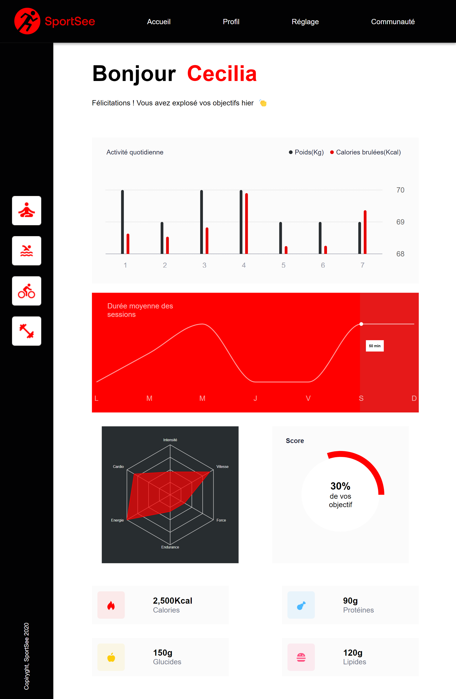

Découvrez mon Portofolio
N'hésitez pas, entrez dans les projets
Ces projets ont été réalisés dans le cadre de l'obtention du
Titre professionnel de Développeur Concepteur de Logiciel. Chaque
projet a été l'occasion de mettre en pratique des outils et de se
perfectionner dans différents languages. Ils représentent tous un
aspect différent du métier. Tous ne sont cependant pas présent sur
le site, je vous invite donc a rejoindre mon github afin d'en voir
d'autres.
Publication dans npm
Visiter le prototypeCréation et publication dans npm d'un package react Table, et création d'une application de gestion des employées
- Création d'un composant réutilisable Table avec filtrage général, tri, management et filtrage par colonnes, pagination, choix de l'affichage par page
- Publication public de table-component-library dans npm library
- création d'un composant dropdown réutilisable
- Utilisation de React redux et memo
- DatePicker en MUI avec controller, minDate, maxDate et message d'erreur


React Router
Visiter le prototypeSite de présentation de logements en location, en JSX et JS
- Routage par react-router-dom,
- Découpage en functionals components réutilisables,
- Simulation d'appel API par un fetch sur les datas dans un useEffect,
- Données transmises par props
- Gestion des evenListener par useState
- Modal d'image avec bouton consitionnel,
- Effets d'animations
- Stylisé en Sass

React Recharts
Visiter le prototypeCréation d'un tableau analytics codé en JSX, JavaScript,et Recharts
- Radar, RadialBarChart, BarChart, LineChart
- Personnalisation des Tooltips
- Création d'un hook pour la récupération des données
- Appel Api par axios
- Formatage des données par JavasCript
- Utilisation des propTypes
- Commentaire en JSDoc
- Stylisé avec styled components


Accessibilité, tri
Visiter le prototype
Site de photographes en VanillaJS
- Respect des normes d'accessibilité du W3C et du RGAA
- Gestion du focus notamment dans les modals d'inscription ou de visionnage d'images et de vidéos
- Code pour liseuses d'écran avec aria et sr-only
- Création des pages de photographe de manière dynamique par JS
- Pas d'erreur au vérificateur W3C sur le HTML et le CSS
- test lighthouse de devTools: 100% (version desktop et mobile)
- Intégration de maquette


Filtrage en JS
Visiter le prototype
Site de recherche de recettes de cuisines avec plusieurs types de recherches possibles imbriquées
- Codé en VanillaJS, utilisation d'un proxy
- Création du schéma de l'algorithme par draw.io et de la fiche d'investigation de fonctionnalité
- Deux versions créées sur deux branches github: filtrage par boucles natives et filtrage en programmation fonctionnelle
- Test de performance (Jsben.ch)
- Stylisé en Bootstrap et CSS


Dynamiser
Visiter le prototypeSite de réservation de plats en restaurant
- Stylisé en Sass avec import de fichier
- Mise en œuvre d'effets CSS graphiques avancés
- Loader, Changement de couleur, surlignage dynamique, effet de slide, de rotation
- Utilisation d'un système de gestion de versions pour le suivi du projet et son hébergement
- Respect de la cohérence graphique du site web
- Mise en place d'une structure de navigation pour un site web


Landing page
Visiter le prototypeSite d'inscription à un concours de jeux
- Mise en place du formulaire d'inscription en modal
- Contrôles d'entrées des inputs par JavaScript (Calcul d'âge d'après entrée calendrier, format email, nom, vérification de checked)
- Utilisation de regex
- Installation de la responsivité avec la nav en menu hamburger
- Intégration dans le respect de la maquette
- Animations visuelles et audio


React, Redux toolkit
Site avec connexion par compte d'utilisateur
- Utilisation d'une api REST
- Création du fichier swagger
- Utilisation du localStorage avec cryptage des données
- Sécurisation des échanges avec l'api par token, gestion de celui-ci en cas de rafraîchissement
- Utilisation de redux et redux/toolkit pour un store accessible dans toute l'application
- Vérification par JavaScript des inputs avant soumission de formulaire
- Surveillance des routes avec autorisation